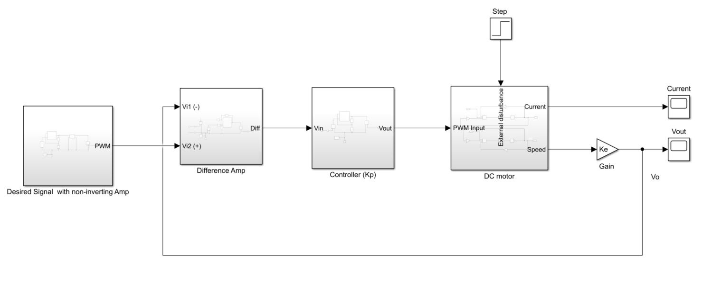

Designing mechatronics labs via Simulink for ME2 students at Imperial
Following the Covid-19 pandemic, Imperial College has transitioned to fully remote operation since the end of March 2020. The effects of such a change has been significant for the mechanical engineering department as the nature of the course demands students to have hand on experience on hardware in order to obtain the full epxerience of learning. Whilst the department was hoping to return to in-person teaching as soon as possible, academics have been preparing for all eventualities, and prepare for a fully remote experience for students who cannot return at the beginning of the next semester.
As a final year student, I volunteered to become an undergraduate researcher who was tasked to prepare the second year mechatronics labs such that it is deliverable in a fully simulated environment. Despite losing out on the physical experience, students will not get the next best alternative. This style of modelling and divising simulations is commonly found in academic research and in the engineering industry, as physical testing can be tedious and costly. Thus, I have chosen to use the powerful Simulink environment to do this job.
Below you can see an example piece of work that I have implemented in Simulink. The simple proportional velocity control system model implemented here was done from first principles (using the simplest circuit components such as resistors, capacitor, Op-Amps and H-Bridges), then organized into subsystems for the ease of simulation.
However, my job doesn't stop there. Together with the fully coded simulations, I was also tasked with rewriting the lab supplementary documents of the mechatronics course, making it fit for this simulated experience. The journey I have been on to design these experiments has been difficult at times, simply due to the fact that it is often quite difficult to replicate the full experience on Simulink. But ultimately, this experience has been extremely valuable for me, as it has taught me how to think independently, how to craft educational documents, and how to use Simulink effectively.